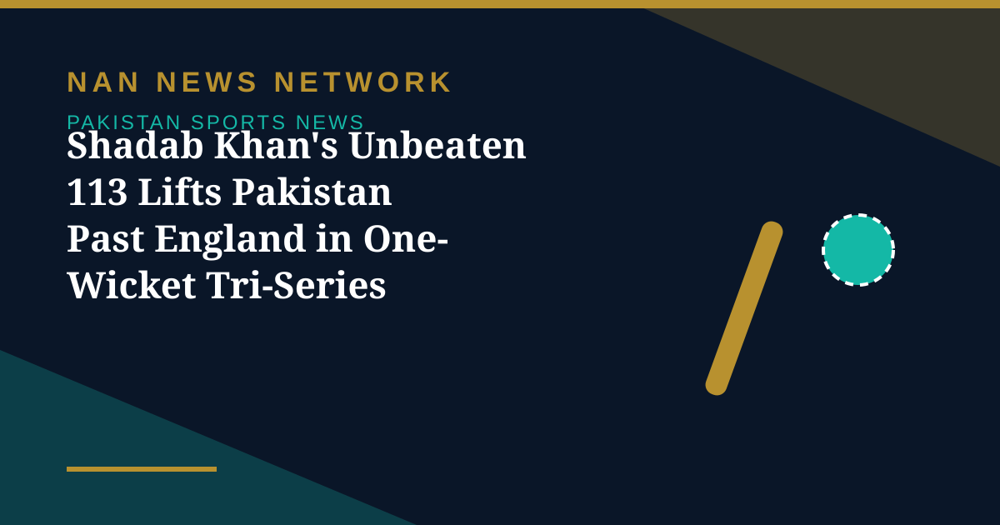

Shadab Khan's Unbeaten 113 Lifts Pakistan Past England in One-Wicket Tri-Series Thriller

Pakistan all-rounder Shadab Khan struck an unbeaten 113 and shared a record 89-run last-wicket stand with Haris Rauf as the hosts rallied from 154-9 to secure a one-wicket win over England in Lahore on Sunday and book their place in the tri-series final. Chasing 242 for victory, Pakistan appeared to be heading towards defeat after England's bowlers reduced them to 154-9 in the 34th over — and then produced one of the great ODI escapes.
England's innings: Duckett stands alone
Earlier, England were bowled out for 241 in 46.4 overs despite Ben Duckett's composed 105. Shaheen Shah Afridi led Pakistan's bowling effort with 4-46 to dismantle England's top order, striking in the opening over to dismiss Tom Banton before removing Joe Root in the third over, while Jordan Cox fell to Haris Rauf as England slumped to 52-4. Ben Duckett and Sam Curran steadied the innings with a fifth-wicket partnership of 93; Curran made 42 before becoming Afridi's third victim. Jamie Overton helped take England past 200, while Gus Atkinson finished unbeaten on 36. The defeat was England's third successive loss in the tri-series after Sri Lanka completed the second-highest successful run chase in ODI history, reaching a target of 430 with one ball to spare.
Pakistan's collapse — and then the impossible
Pakistan lost Fakhar Zaman and Babar Azam for 10 apiece before Saad Baig struck a brisk 32 off 22 balls and Salman Ali Agha made 26 to briefly revive the chase. Shadab Khan came to the crease in the 24th over with the hosts struggling at 103-6, and by the 34th over Pakistan were 154-9, with a full-house Gaddafi Stadium largely emptied. What followed was extraordinary. Shadab launched a superb counter-attack and, with Rauf making an unbeaten seven off 19 balls, guided the hosts to victory with 17 balls to spare. Their 89-run partnership was the highest for the final wicket in a successful ODI run chase, and Shadab's score was also the highest individual score in ODI history by a batter batting at number eight or lower. Shadab struck 13 fours and five sixes in his 96-ball innings.
The review that saved the match
The drama peaked when Shadab was given out lbw to Atkinson with 21 runs needed, but successfully reviewed the decision after replays showed an inside edge. Restored to the crease, he took Pakistan to the finish line, with Rauf hitting debutant quick Henry Crocombe for the winning boundary. Seamers Gus Atkinson (2-62), Jamie Overton (3-43) and spinner Liam Dawson (2-30) had all but wrapped up the game — until the last-wicket pair rewrote it. Pakistan are into the final; England, who must now win against Sri Lanka to have any chance of joining them, are left to wonder how a match they had won slipped away.
Sources: Reuters, October 25, 2026; The Express Tribune; ESPNcricinfo.